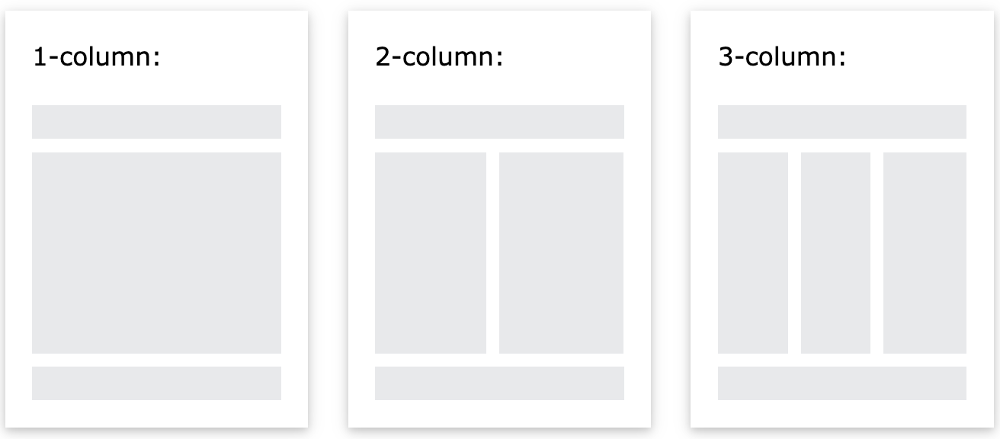

CSS Website Layout
A website is often divided into headers, menus, content and a footer:

There are countless layout designs available, and this is just one common example.
Header
A header is usually located at the top of the website (or right below a top navigation menu).
It often contains a logo or a website name.
Example:
.header {
background-color: #F1F1F1;
text-align: center;
padding: 20px;
}
Navigation Bar
A navigation bar contains a list of links to help visitors navigate through your website.
Example
/* The navbar container */
.topnav {
overflow: hidden;
background-color: #333;
}
/* Navbar links */
.topnav a {
float: left;
display: block;
color: #f2f2f2;
text-align: center;
padding: 14px 16px;
text-decoration: none;
}
/* Links - change color on hover */
.topnav a:hover {
background-color: #ddd;
color: black;
}
Content
The layout in this section often depends on the target users. The most common layout is one (or combining them) of the following:
- 1-column (often used for mobile browsers)
- 2-column (often used for tablets and laptops)
- 3-column layout (only used for desktops)

Reference